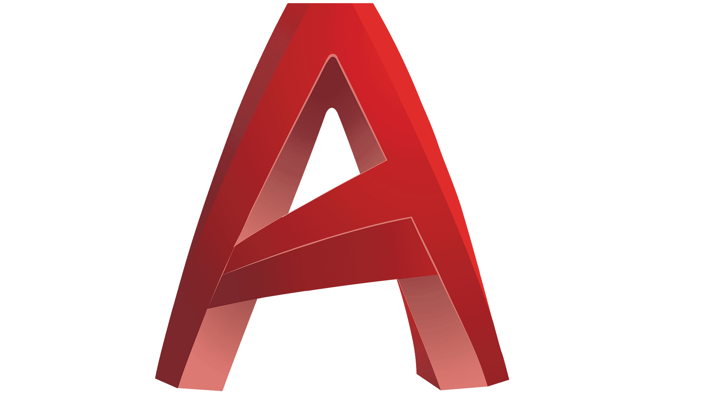
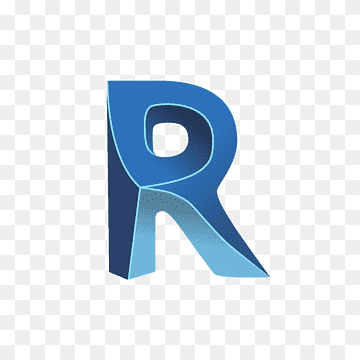
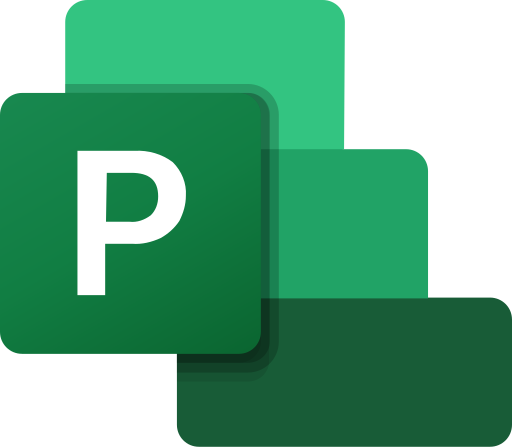

Experiencia profesional
Con una sólida formación en ingeniería civil y varios años de experiencia práctica liderando proyectos de construcción complejos, he desarrollado una comprensión integral de los procesos técnicos, financieros y de gestión en todas las etapas del proyecto: desde la revisión de diseños y estimación de costos, hasta la ejecución en obra y entrega final. A lo largo de mi carrera, he coordinado equipos multidisciplinarios, optimizando recursos y asegurando que cada proyecto cumpla con altos estándares de calidad, seguridad y eficiencia. Mi experiencia incluye:
- Gestioné más de 10 proyectos de gran escala en sectores como campus educativos, instalaciones aeronáuticas, edificaciones gubernamentales e infraestructura hospitalaria.
- Lideré la programación de proyectos y el análisis de ruta crítica utilizando Microsoft Project, garantizando entregas puntuales y dentro del presupuesto.
- Realicé análisis de costos detallados, estudios de precios unitarios y cómputos métricos para asegurar presupuestos precisos y competitivos.
- Supervisé las operaciones en obra, garantizando el control de calidad, el cumplimiento de normas de seguridad y construcción, y la ejecución en los tiempos previstos.
- Coordiné equipos multidisciplinarios para alinear los esfuerzos técnicos y administrativos con los objetivos del cliente.
- Revisé presupuestos de consultores y actas de pago, asegurando transparencia y precisión financiera.
- Mantuve una comunicación fluida en todas las etapas del proyecto, asistiendo a reuniones técnicas y brindando reportes regulares a directores y partes interesadas.
- Garanticé la continuidad operativa en obra mediante una gestión eficiente de la asignación de personal, la logística de materiales y los pagos a proveedores.
Stack Tecnológico

AutoCAD

Revit

MS Project

Excel
 LinkedIn
LinkedIn Email
Email GitHub
GitHub